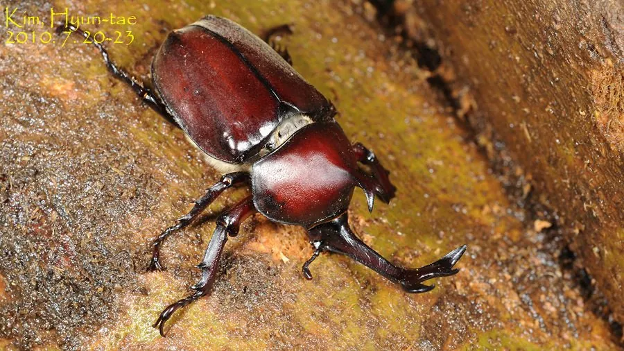

昆虫 · 动物界
独角仙 Trypoxylus dichotomus

雄性头部长有末端分叉的大角，体态威武，幼虫生活于腐殖土中，是东亚著名的观赏甲虫，常被当作宠物饲养。
- 分类
- 门节肢动物门纲昆虫纲目鞘翅目科金龟科属犀金龟属
- 栖息环境
- 阔叶林、杂木林与果园，幼虫在腐殖土和朽木中生活
- 地理分布
- 中国东部与南部、日本、朝鲜半岛和中南半岛
- 保护级别
- 暂无评估
物种志
独角仙成虫体长（含角）约 4–8 cm，雄虫头部有一根向前上方伸出、末端分叉的大角，前胸背板中央还有一根短角；雌虫没有大角，体型较小。体黑褐色，鞘翅坚硬有光泽，足粗壮，末端带爪，善于在树干上攀爬。
幼虫（蛴螬）在腐殖土和朽木屑中生活，取食腐殖质，约 10 个月后化蛹。成虫于夏季 6–8 月羽化，夜间活动，有趋光性，白天多躲在树干或落叶层中，取食树液和熟果，寿命约 2–3 个月。雄虫会为了争夺树液和雌虫用头角互相顶撞，把对手撬起掀翻。独角仙分布于中国东部和南部、日本、朝鲜半岛及中南半岛，在日本是极受欢迎的宠物昆虫，被称为甲虫之王。
形态与习性
- 食性幼虫吃腐殖土和朽木；成虫吸食树液、熟果
- 体长雄虫含角约 5–8 cm，雌虫约 4–5 cm
- 生活史幼虫期约 10 个月，成虫寿命约 2–3 个月
- 角的作用雄虫用头角争夺领地和雌虫
- 习性夜行、有趋光性，白天多在树干或落叶层躲藏
- 文化在日本被广泛饲养，被称为甲虫之王
趣味知识
- 独角仙的角是头部和胸部的外骨骼突起，不是骨头，也不能咬人。
- 雄性会用角把对手撬起掀翻，争夺树液和雌虫。
- 在日本，独角仙是夏季常见的宠物昆虫，还有专门出售甲虫的商店。